RESEARCH · EXCHANGE · MILESTONES
News
New results, shared ideas, and the people and places behind the mathematics.
Updates on optimal transport, mathematical imaging and randomized numerical linear algebra.
Coming up
- 1–4 November 2026 · Tutzing
SPP 2298 retreat. Details - 16–19 November 2026 · Salt Lake City
Organizing the minisymposium “Optimal Transport in Imaging” at SIAM Imaging Science 2026. - 8–12 March 2027 · Ulm
Tight Tikhonov regularization for sphere-valued data at GAMM 2027. - 24–28 May 2027 · Long Beach
Randomized singular value decomposition at SIAM Linear Algebra 2027.
Learning geometry without labels — now published
Unsupervised Ground Metric Learning is published in Constructive Approximation. Joint work with Janis Auffenberg, Oleh Melnyk and Gabriele Steidl on learning distances between samples and features, with algorithms and convergence guarantees for unsupervised metric learning.

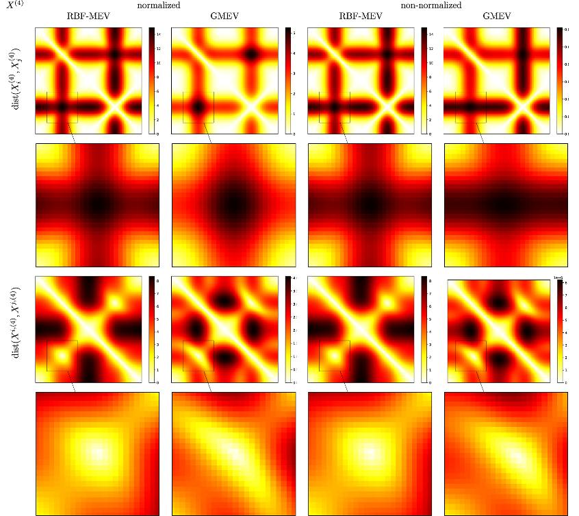
Postdoc Support Fund backs my SIAM Imaging Science trip
I received more than €3,000 in travel funding within the German Statistical Society (DStatG), through the Postdoc Support Fund of LMU’s Faculty of Mathematics, Informatics and Statistics for SIAM Imaging Science 2026 in Salt Lake City, USA, on 16–19 November. At the conference, I am organizing the minisymposium “Optimal Transport in Imaging”. Thank you for supporting this opportunity to exchange ideas with the imaging community.
A new connection with SIAM
Since October 2026, I am a member of the Society for Industrial and Applied Mathematics (SIAM).
Tight relaxations on the Berlin programme
A presentation on tight convex relaxed regularization for manifold-valued data was listed for the 2026 meeting in Berlin.

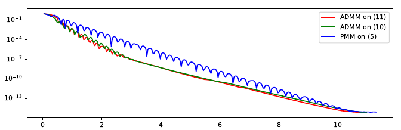
Transport features meet geometric machine learning
At MML 2026 in Munich, I presented generalized normalized Radon cumulative distribution transforms and their role in pattern recognition.

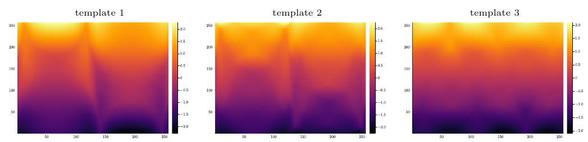
More invariance. Less training data.
Our generalizations of the normalized Radon cumulative distribution transform are now published in the Journal of Mathematical Imaging and Vision. Joint work with Matthias Beckmann and Robert Beinert on transport-based representations for limited-data recognition.

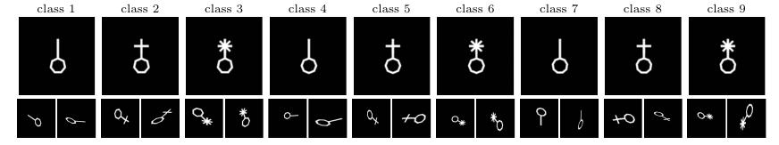
Operator norms, without the adjoint
Our matrix-free stochastic method for estimating operator norms appears in SIAM Journal on Matrix Analysis and Applications, 47(3), 1349–1374. With Dirk A. Lorenz, Felix Schneppe and Maximilian Winkler. Accepted in March; available open access since July.

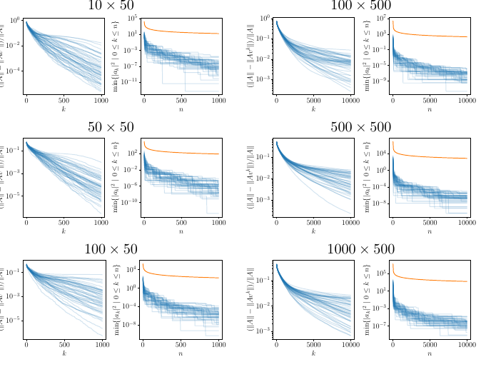
Celebrating BMS graduation in Berlin
I celebrated my BMS graduation at the certificate ceremony on 10 July 2026 at Freie Universität Berlin. A special opportunity to mark the completion of Phase II with the BMS community, family and friends.

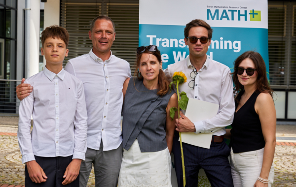
Matrix quantities on the FoCM stage
At Foundations of Computational Mathematics in Vienna, I presented a poster on stochastic zeroth-order methods for computing matrix quantities.

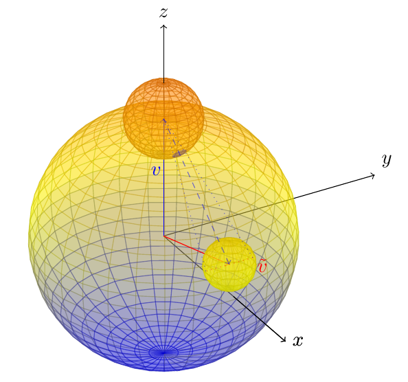
A new chapter at LMU Munich
I joined Gitta Kutyniok’s group as a postdoctoral researcher at the Bavarian AI Chair for Mathematical Foundations of Artificial Intelligence, Ludwig-Maximilians-Universität München. I look forward to connecting mathematical theory, imaging and AI.

Making adjoint mismatch measurable
Computing Adjoint Mismatch of Linear Maps is now available open access in the Journal of Computational and Applied Mathematics. Joint work with Dirk A. Lorenz, Felix Schneppe and Maximilian Winkler. Accepted in March 2026; assigned to the December 2026 issue.

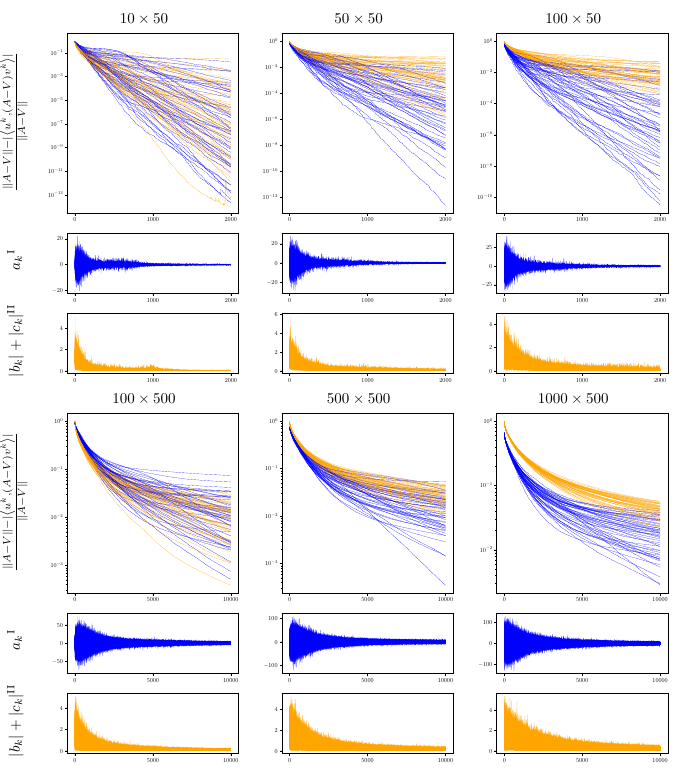
From Radon transforms to recognition — in Malta
At IPMS 2026, I spoke about generalized normalized Radon cumulative distribution transforms for pattern recognition and classification, and explored connections between John and Radon transforms.

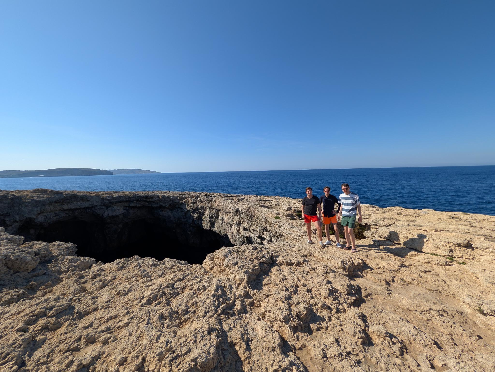
DAAD support for IPMS in Malta
I received €1,000 in DAAD travel support (first travel category) for participation in IPMS 2026 in Malta. Thank you for supporting the exchange of ideas on inverse problems and imaging.
Stochastic matrix methods in Blacksburg
At ILAS 2026 in Blacksburg, Virginia, I presented stochastic zeroth-order calculation of operator quantities and discussed ideas for randomized Krylov methods.

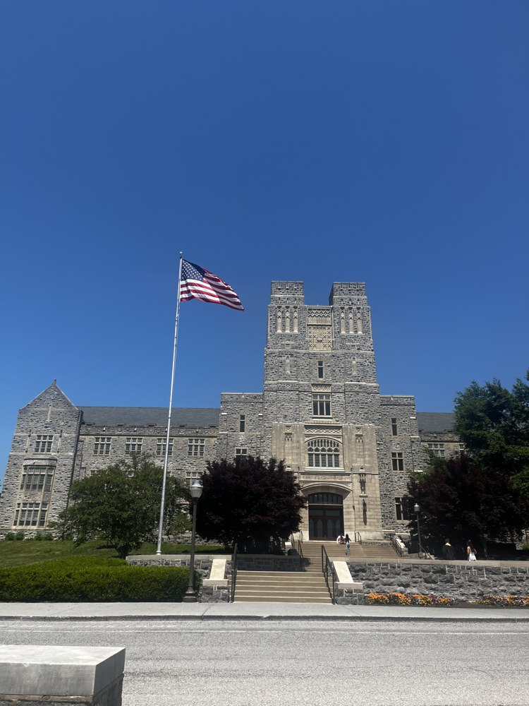
Doctorate completed — and available to read
Following my defense in April, my dissertation was accepted and made openly available in May: Geometry-Aware Ansätze in Image Processing and Stochastic Calculations of Matrix Quantities. Supervised by Gabriele Steidl at TU Berlin.
BMS and MATH+ support for ILAS
I received €2,800 in travel support from the Berlin Mathematical School and MATH+ for ILAS 2026 in Blacksburg, Virginia.
Random search, exact steps, faster optimization
Preprint: Generalization of Zeroth-Order Method for Quotients of Quadratic Functions. I generalize zeroth-order methods for quotients of quadratic functions, connecting randomized search to generalized Rayleigh quotients and accelerated algorithms. First submitted to arXiv as version 1 on 29 April 2026.

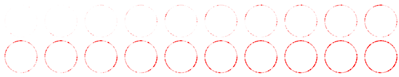
Robust image classification through transport
Our normalized Radon cumulative distribution transforms paper is available in SIAM Journal on Imaging Sciences, 19(2), 677–709. With Matthias Beckmann and Robert Beinert, we study invariance and robustness in optimal transport based image classification. Accepted in February 2026.

Completing my time as a BMS Phase II student
From February 2024 until April 2026, I was a member and phase II student of the Berlin Mathematical School.
A research visit to Boulder
During my visit to the University of Colorado Boulder, I presented stochastic zeroth-order computation of generalized Rayleigh quotients and explored randomized kernel ridge regression and constrained quadratic optimization.

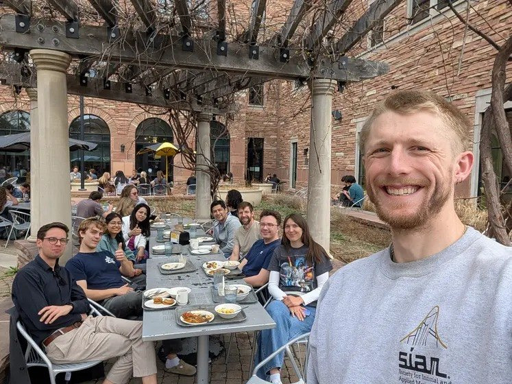
A Radon transform built from cube–plane geometry
Preprint: A Discrete Radon Transform Based on the Area of Cube-Plane Intersection. With Robert Beinert and Michael Quellmalz, I derive a discrete Radon transform for voxelized data using cube–plane intersections, with applications to shape matching and sliced Wasserstein barycenters. First submitted to arXiv as version 1 on 13 March 2026.

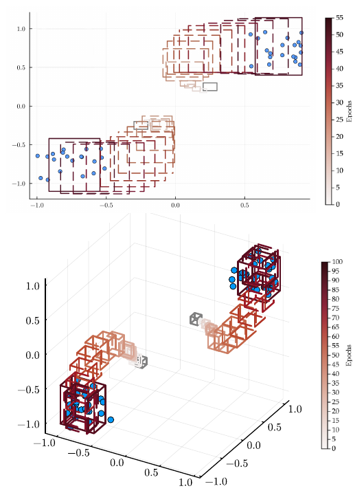
Research exchange supported across the Atlantic
My Boulder research visit received €1,900 in combined support from BMS, MATH+ and the University of Colorado Boulder.
A workshop contribution on manifold-valued denoising
Denoising Manifold-Valued Data by Relaxed Regularizations is available in Oberwolfach Reports, volume 22(4), following the December 2025 workshop.

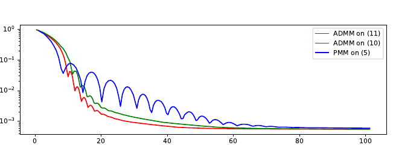
Restoring color codes and structured data
Our paper on denoising multi-color QR codes and Stiefel-valued data is now available in Proceedings in Applied Mathematics and Mechanics. Joint work with Robert Beinert, using relaxed regularization models for manifold-valued data.

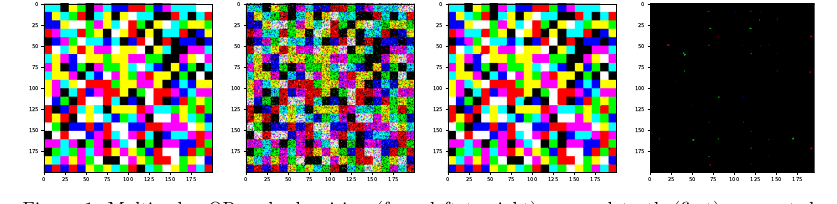
Transport features beyond the plane
Preprint: Generalizations of the Normalized Radon Cumulative Distribution Transform for Limited Data Recognition. With Matthias Beckmann and Robert Beinert, I extend normalized Radon cumulative distribution transforms to more flexible normalizations, higher dimensions and non-Euclidean settings. First submitted to arXiv as version 1 on 8 December 2025.

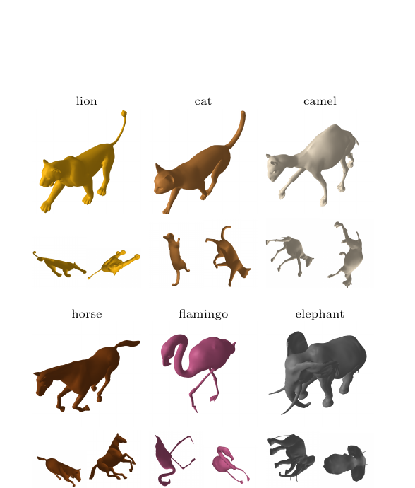
Manifold-valued denoising at Oberwolfach
At the workshop Approximation of Manifold-Valued Functions, I presented relaxed regularizations for denoising manifold-valued data. The contribution is also available in Oberwolfach Reports.

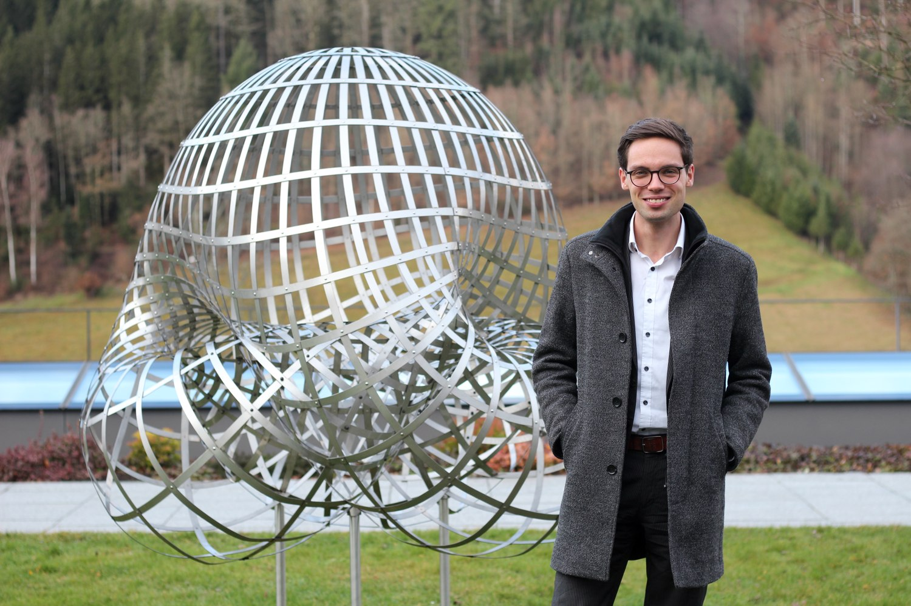
Generalized Rayleigh quotients, without adjoints or inverses
Preprint: Stochastic Zeroth-Order Method for Computing Generalized Rayleigh Quotients. With Oleh Melnyk, Martin Schoen and Gabriele Steidl, I develop a stochastic zeroth-order method for generalized Rayleigh quotients, with convergence guarantees and numerical experiments. First submitted to arXiv as version 1 on 5 December 2025.

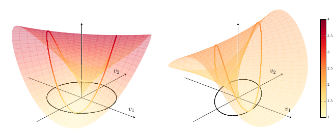
A new route between classical and regularized transport
Our paper with Viktor Stein on Rényi-regularized optimal transport is published in Results in Mathematics. The Rényi parameter provides an interpolation between unregularized and KL-regularized transport.

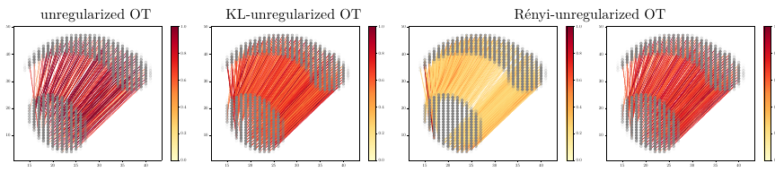
Learning the geometry behind the distance
At the Conference on Mathematics of Machine Learning in Hamburg, I presented Unsupervised Ground Metric Learning as a poster.

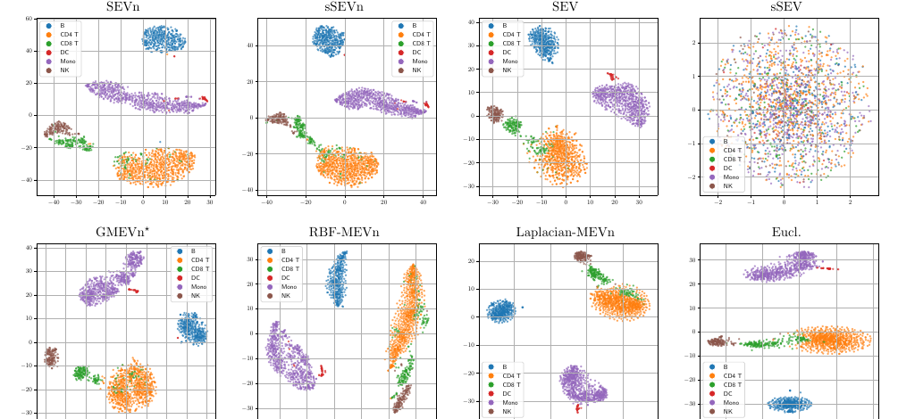
Let the data shape the ground metric
Preprint: Unsupervised Ground Metric Learning. With Janis Auffenberg, Oleh Melnyk and Gabriele Steidl, I study algorithms and models for learning the geometry used to compare unlabeled data. First submitted to arXiv as version 1 on 17 July 2025.

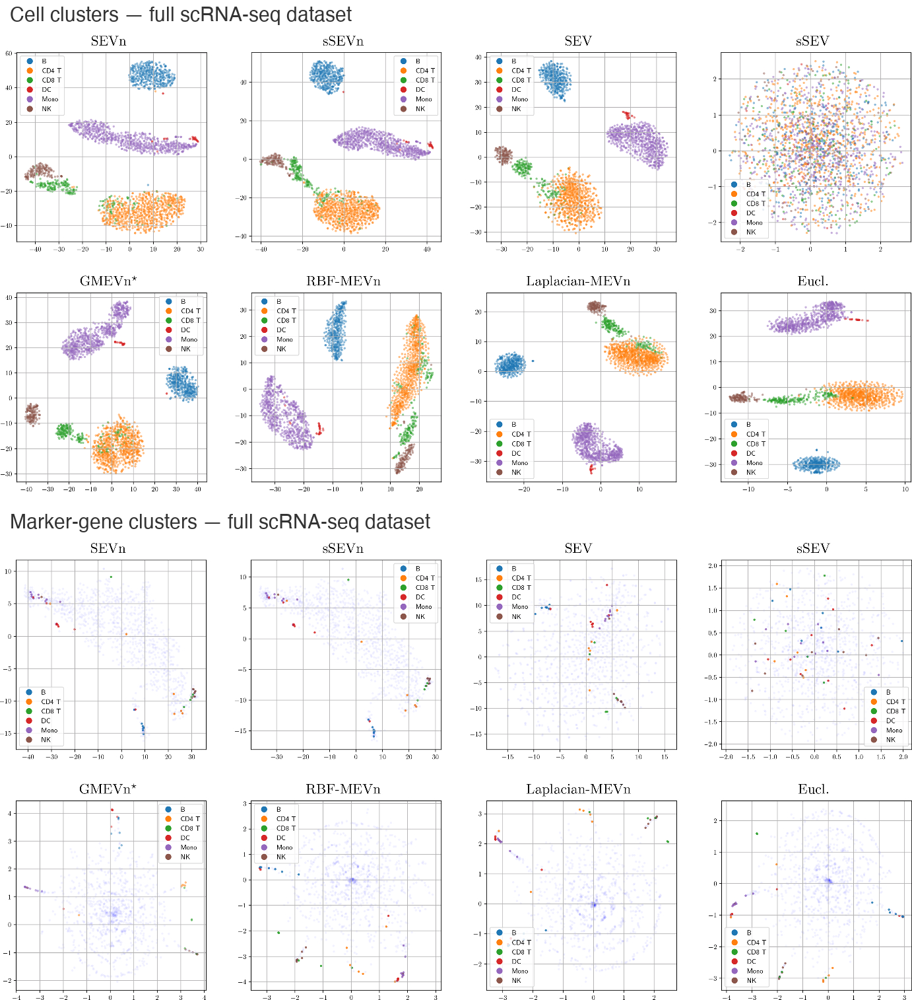
Restoring color codes and structured data
Preprint: Denoising Multi-Color QR Codes and Stiefel-Valued Data by Relaxed Regularizations. With Robert Beinert, I study relaxed regularizations for denoising multi-color QR codes and Stiefel-valued data. First submitted to arXiv as version 1 on 28 June 2025.

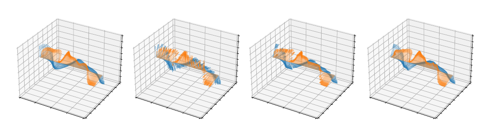
Matrix-free norm estimation in Taiwan
At ILAS 2025 in Kaohsiung, I presented matrix-free stochastic calculation of operator norms without using adjoints.

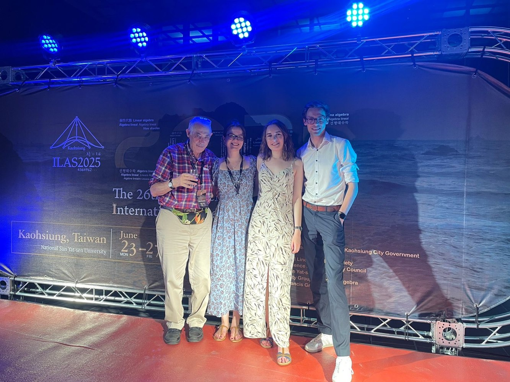
Image recognition that respects transformations
Preprint: Normalized Radon Cumulative Distribution Transforms for Invariance and Robustness in Optimal Transport Based Image Classification. With Matthias Beckmann and Robert Beinert, I investigate normalized Radon cumulative distribution transforms for invariant and robust optimal transport based image classification. First submitted to arXiv as version 1 on 10 June 2025.

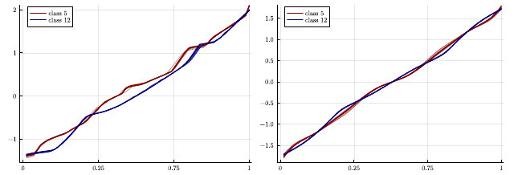
DAAD support for ILAS in Taiwan
I received €2,700 in DAAD travel support (fourth travel category) for ILAS 2025 in Kaohsiung, Taiwan.
Transport-based recognition at Dartington Hall
At SSVM 2025 in Totnes, Devon, I presented normalized Radon cumulative distribution transforms for image classification.

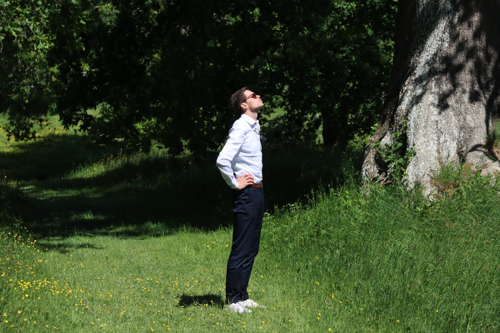
Small-data recognition, now in SSVM proceedings
Max-Normalized Radon Cumulative Distribution Transform for Limited Data Classification, with Matthias Beckmann and Robert Beinert, is available in the SSVM 2025 proceedings, Lecture Notes in Computer Science, volume 15667.

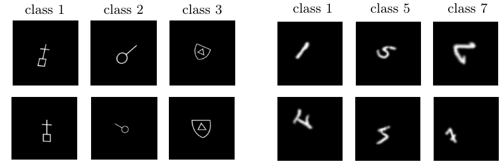
Hyperbolic denoising joins the SSVM proceedings
Denoising Hyperbolic-Valued Data by Relaxed Regularizations, with Robert Beinert, is available in the SSVM 2025 proceedings, Lecture Notes in Computer Science, volume 15667.

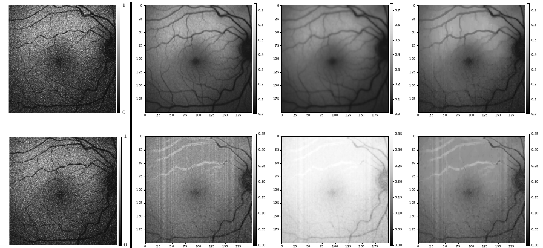
Hyperbolic geometry meets denoising in Poznań
At GAMM 2025, I presented denoising hyperbolic-valued data by relaxed regularizations.

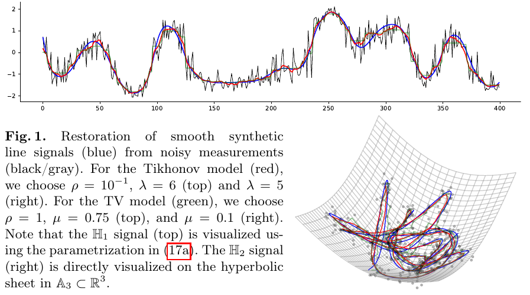
When the adjoint does not quite match
Preprint: Computing adjoint mismatch of linear maps. With Dirk A. Lorenz, Felix Schneppe and Maximilian Winkler, I develop stochastic algorithms to quantify adjoint mismatch using black-box evaluations of linear maps. First submitted to arXiv as version 1 on 27 March 2025.

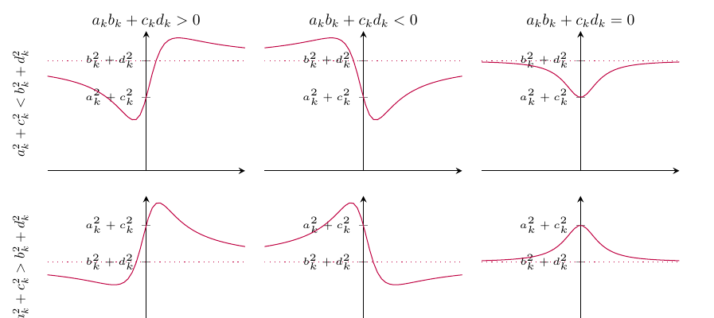
Manifold-valued denoising in Bremen
My event archive records a contribution on denoising techniques for manifold-valued data in the optimization seminar in Bremen.

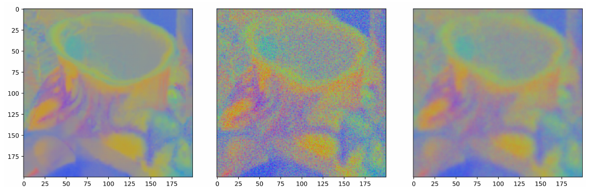
Canceled: Optimal Transport and Applications
My event archive marks the planned visit to Optimal Transport and Applications at the Centro di Ricerca Matematica Ennio De Giorgi as canceled.
Recognizing shapes with very few examples
Preprint: Max-Normalized Radon Cumulative Distribution Transform for Limited Data Classification. With Matthias Beckmann and Robert Beinert, I introduce the max-normalized Radon cumulative distribution transform for classification in the limited-data regime. First submitted to arXiv as version 1 on 25 November 2024.

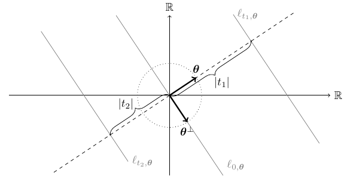
Denoising in hyperbolic geometry
Preprint: Denoising Hyperbolic-Valued Data by Relaxed Regularizations. With Robert Beinert, I develop relaxed regularization models for hyperbolic-valued data, including the restoration of estimated statistics from retinal images. First submitted to arXiv as version 1 on 21 October 2024.

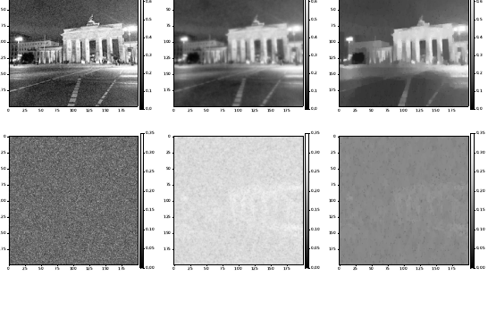
Operator norms, without the adjoint
Preprint: Matrix-free stochastic calculation of operator norms without using adjoints. With Dirk A. Lorenz, Felix Schneppe and Maximilian Winkler, I study matrix-free stochastic calculation of operator norms using only forward evaluations and exact line searches. First submitted to arXiv as version 1 on 10 October 2024.

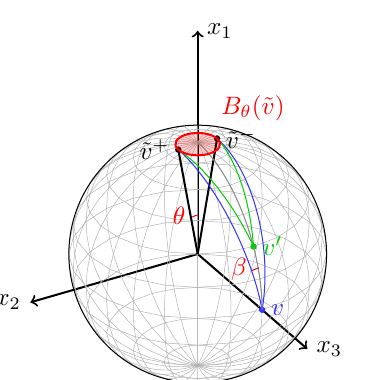
Sphere-valued total variation, published
Denoising Sphere-Valued Data by Relaxed Total Variation Regularization, with Robert Beinert, is available in Proceedings in Applied Mathematics and Mechanics, volume 24(4).

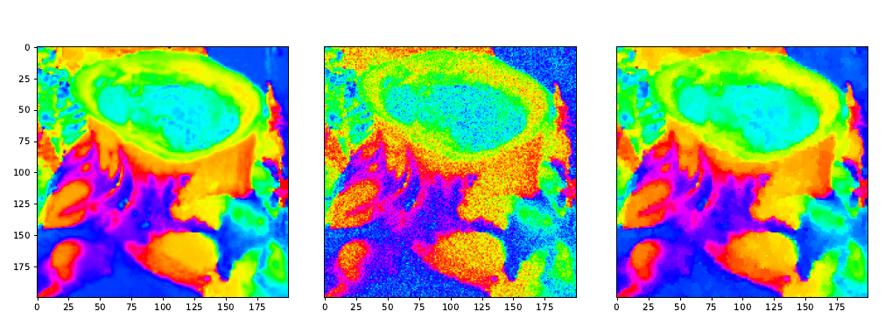
Manifold-valued regularization in Edinburgh
At UQIPI24 at the ICMS Bayes Centre in Edinburgh, I presented a poster on denoising manifold-valued data by relaxed regularization.

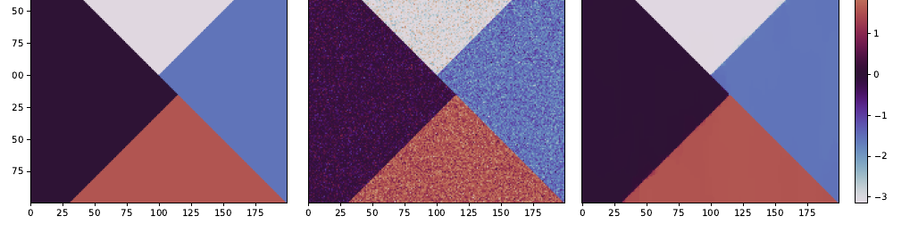
Sphere-valued total variation in the Dolomites
At DWCAA24 in Alba di Canazei, I presented denoising sphere-valued data by relaxed total variation regularization.

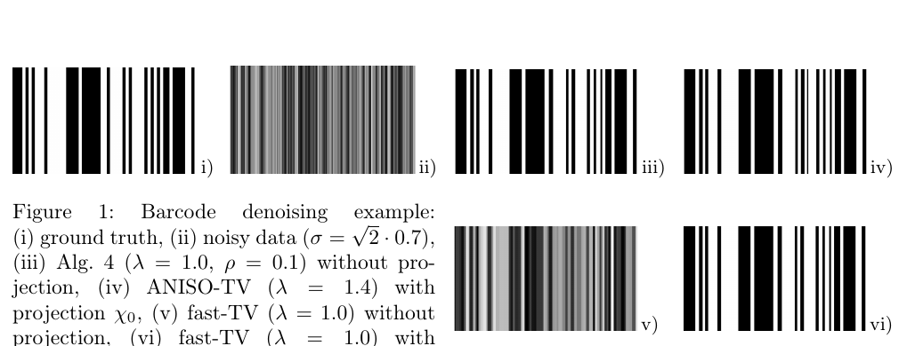
Rényi transport at DWCAA24
At DWCAA24 in Alba di Canazei, I presented our work on interpolation between optimal transport and KL-regularized transport using Rényi divergences.

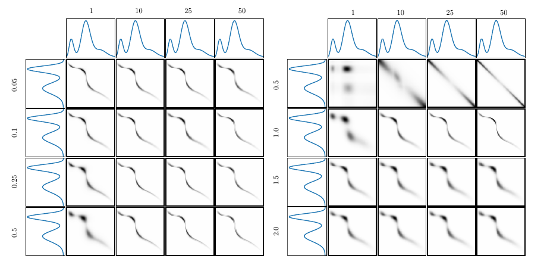
Rényi-regularized transport at CIRM
At the LOL meeting at CIRM in Luminy, I presented a poster on Rényi-regularized optimal transport, joint work with Viktor Stein.

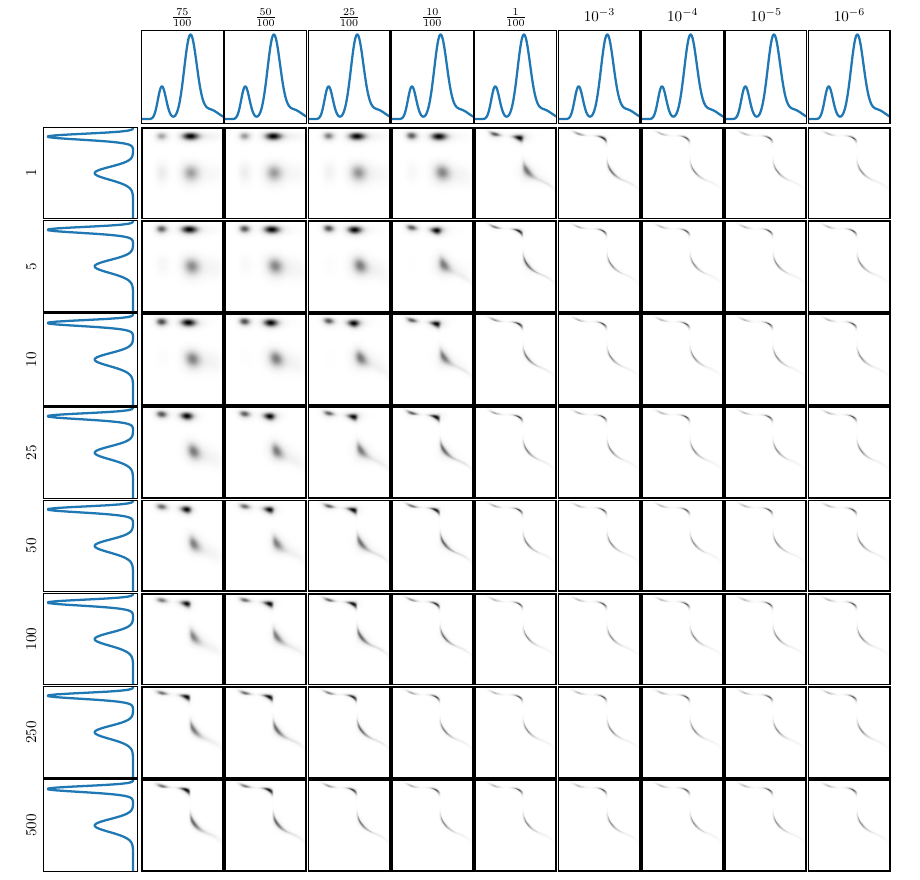
Relaxed denoising for directions and rotations — early access
Denoising of Sphere- and SO(3)-Valued Data by Relaxed Tikhonov Regularization, with Robert Beinert and Gabriele Steidl, is available in early access in Inverse Problems and Imaging. The final article appears in volume 19(1), February 2025.

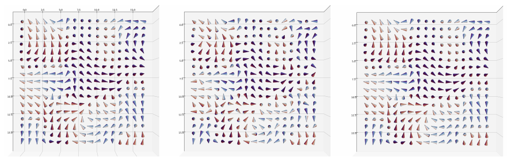
A new route between classical and regularized transport
Preprint: Interpolating between Optimal Transport and KL regularized Optimal Transport using Rényi Divergences. With Viktor Stein, I investigate Rényi-divergence regularization as a route between classical optimal transport and KL-regularized transport. First submitted to arXiv as version 1 on 29 April 2024.

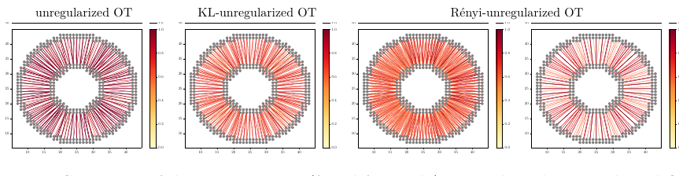
Total variation for data on the sphere
Preprint: Denoising Sphere-Valued Data by Relaxed Total Variation Regularization. With Robert Beinert, I study relaxed total variation models for restoring sphere-valued signals and images, with applications to color restoration. First submitted to arXiv as version 1 on 19 April 2024.

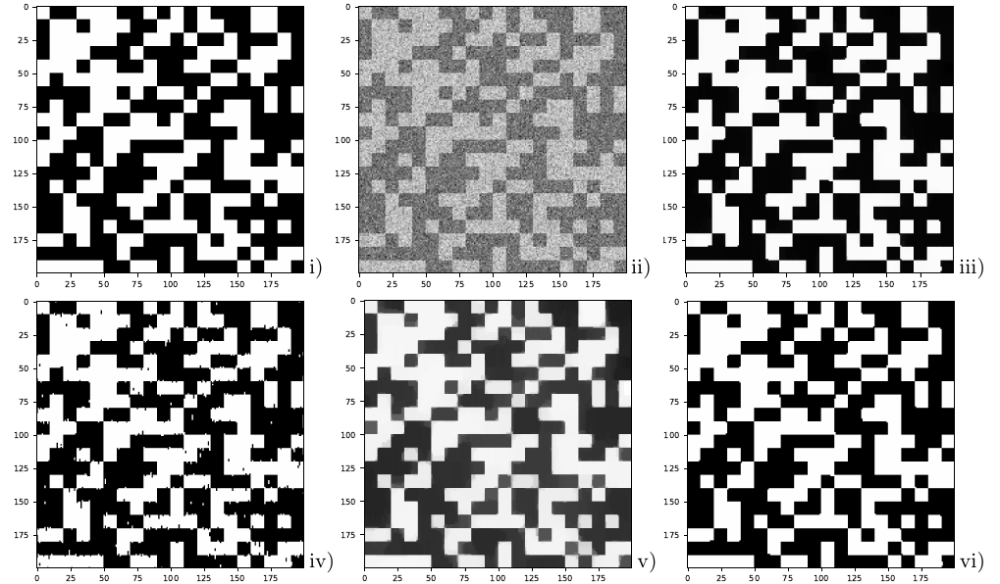
Directions and rotations at GAMM in Magdeburg
At the 94th GAMM Annual Meeting, I presented relaxed Tikhonov regularization for denoising sphere- and SO(3)-valued data.

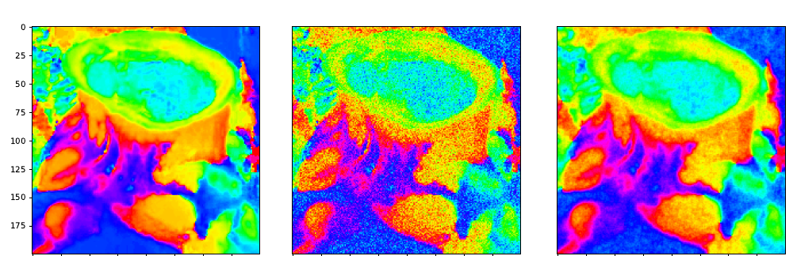
Optimal transport conversations in Berlin
At the Optimal Transport Workshop Berlin at Humboldt-Universität, I presented Rényi-regularized optimal transport, joint work with Viktor Stein.

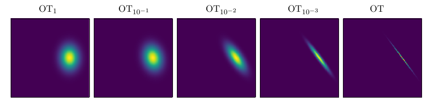
Relaxed manifold-valued denoising in Hagen
At the Rhein-Ruhr Workshop at FernUniversität in Hagen, I presented denoising sphere- and SO(3)-valued data by relaxed Tikhonov regularization.

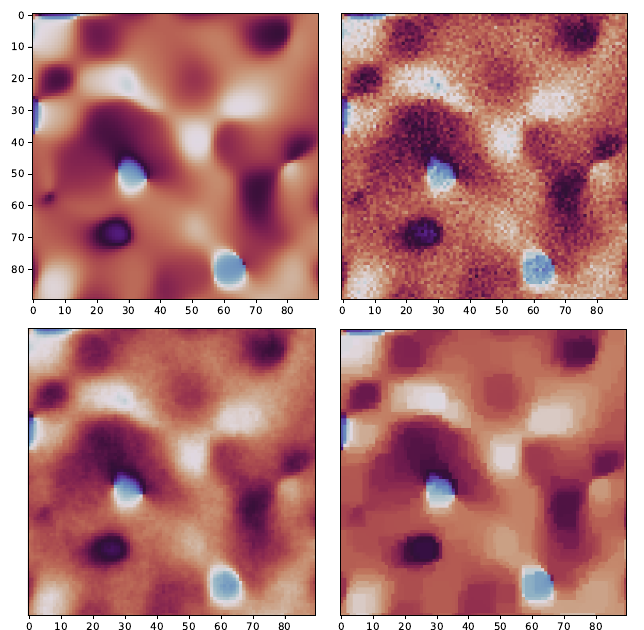
Joining the Berlin Mathematical School
In February 2024, I joined the Berlin Mathematical School (BMS) as a member and phase II student. The BMS is the graduate school of MATH+, the Berlin Mathematics Research Center.
Sharing the first relaxation results in Chemnitz
At the Workshop and Summer School on Applied Analysis at TU Chemnitz, I presented relaxed Tikhonov regularization for sphere- and SO(3)-valued data.

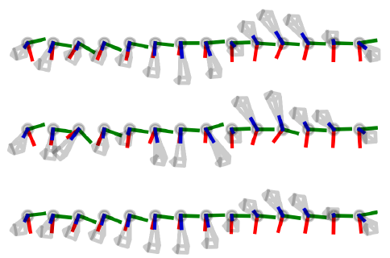
Restoring directions and rotations
Preprint: Denoising of Sphere- and SO(3)-Valued Data by Relaxed Tikhonov Regularization. With Robert Beinert and Gabriele Steidl, I develop relaxed Tikhonov regularization for sphere- and SO(3)-valued data. First submitted to arXiv as version 1 on 20 July 2023.

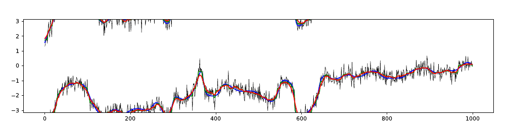
For publication details and the event programme, see Publications and Events.